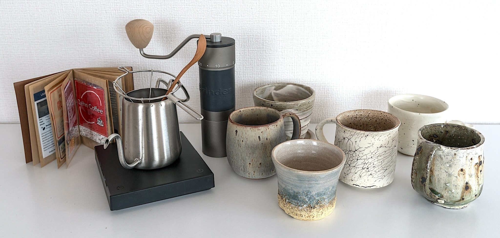
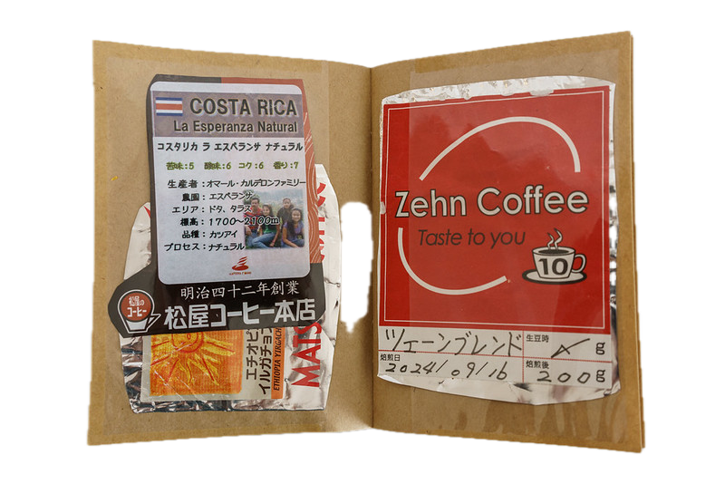
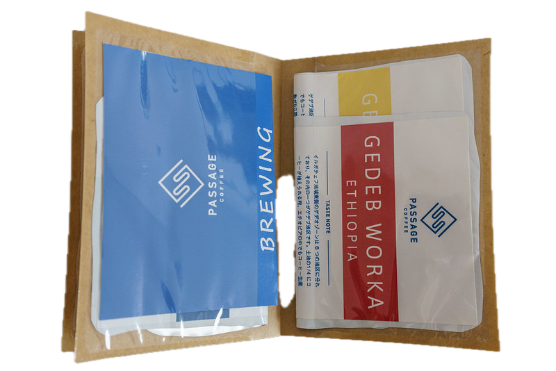
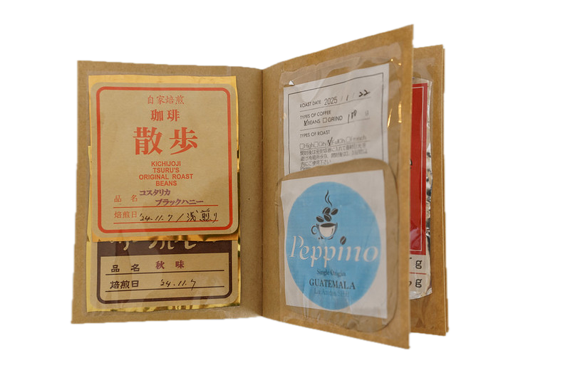
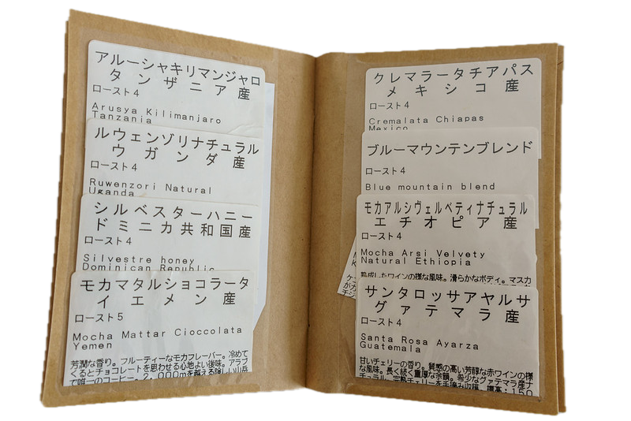

While living and working in Japan in 2024, I was introduced by colleagues to a unique coffee brewing technique called the Matsuya-style drip method. Every afternoon at 2 PM, our team would gather for a coffee break, preparing hand-pulled coffee using this approach. As I visited various Toyota R&D offices across Japan, I noticed that many locations also favored the Matsuya-style drip method. Curious about its widespread use, I visited the Matsuya coffee shop (本店, honten) in downtown Nagoya (Google Map) to master the technique. Since then, I have incorporated this method into my own daily coffee routine.
You can find a detailed explanation of the Matsuya-style drip method from their official website. The key is to extract only the umami flavors of the coffee by stopping the pour when about half of the brewed coffee has dripped through—this is when the most desirable flavors have been extracted. If you continue pouring hot water until the end, unwanted bitter and astringent notes will be drawn out. To finish, fill the remaining half with just hot water.
Matsuya-style drip method requires some special equipments.
- A unique cone-shaped dripper frame that allows excess steam to escape around the filter, enables the coffee grounds to swell during steaming, and promotes efficient water penetration. Unfortunately, this dripper is not widely available outside Japan. [link]
- A high-quality grinder capable of producing a consistently coarse and uniform grind. [affiliated link]
- An electric kettle with quick heating and precise temperature control. [affiliated link]
- A gooseneck drip pot that enables slow, precise water pouring with fine flow control and accurate targeting. [link]

Over time, I've found that the quality and freshness of the coffee beans are essential to achieving optimal flavor. For best results, use freshly roasted beans from a local roastery and grind them immediately before use. In Tokyo, it was easy to find local roasteries offering beans roasted within a week—or even roasted to order on the same day. By contrast, this level of freshness can be much harder to source, especially after returning to Ann Arbor.
Below is a selection of coffee beans I've tried during my time in Japan. My preference is light roast with a fruity acidity. Zehn Coffee in the Ueno area, Passage Coffee close to Shibakoen, and 珈琲散歩 in Kichijoji are some of my favorite coffee shops in Tokyo.



